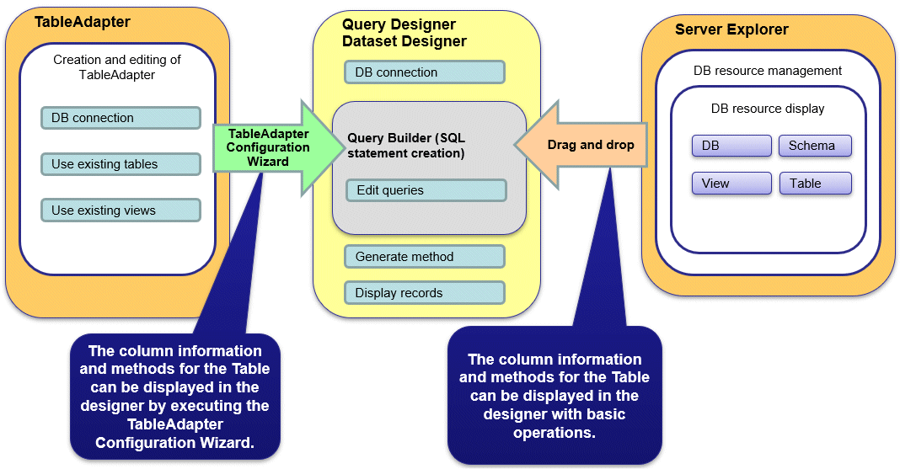

The Visual Studio tools used to automatically generate applications include TableAdapter and Server Explorer, which enable the following:
Data manipulation of database resources with TableAdapter
Management of database resources with Server Explorer
Whether you use TableAdapter or the Server Explorer, programs can be created with basic operations like drag and drop with the resources and tools that comprise Visual Studio.

The following features are available with TableAdapter and Server Explorer:
Manipulation of database resources with TableAdapter
Generating queries using existing tables/views
Generating methods using existing tables/views
Management of database resources with Server Explorer
Listing of database resources
Generating queries using existing tables/views
Generating methods using existing tables/views